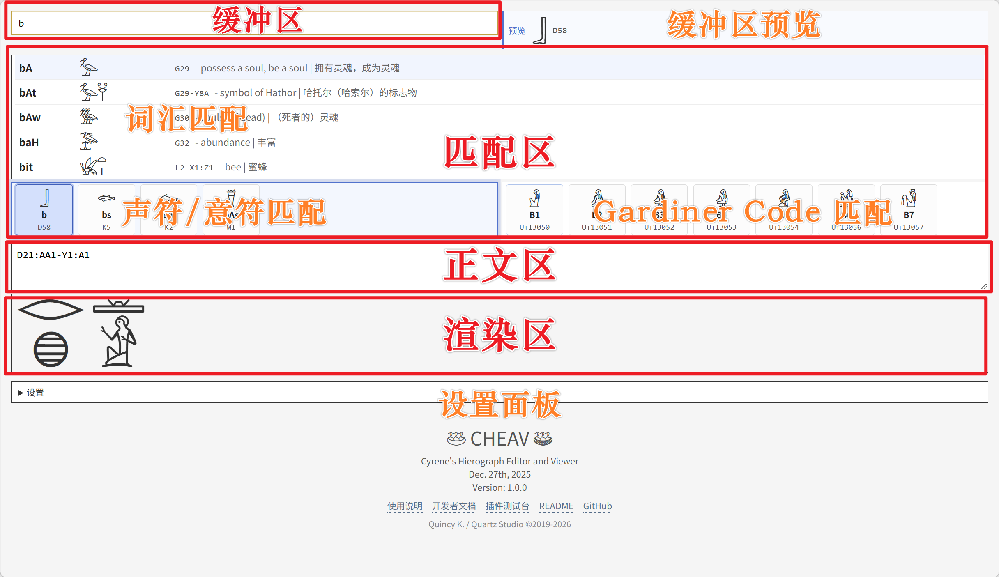

0 界面总览
下图是 CHEAV 的完整界面，红框与文字是说明用的标注，实际页面没有这些标记。

第 1 节先走一遍最常用的两条路径（输入单字符、选中一个词），第 2 节再逐区说明。
1 快速上手
1.1 输入单个字符（nfr）
打开 index.html，把光标放进 缓冲区（页首的输入框），依次做三件事：
| 操作 | 说明 |
|---|---|
输入 nfr |
下方候选区立刻给出匹配项：词匹配区出现「美好」等词条，音素区出现 nfr 单字符。 |
| 按 Tab | 确认当前候选，把它的码写入缓冲区（此处 nfr → F35）。 |
| 按 Enter | 把缓冲区的全部内容规范化为 MdC 后送入正文，缓冲区清空，正文下方即渲染出象形文字。 |
1.2 选择一个词（sA）
要输入的不是单个字符而是一个词时，做法完全一样，只是候选会在词汇匹配里列出多条读音相同的词，
需要你挑出正确的那一条。以 sA（儿子）为例：
| 操作 | 说明 |
|---|---|
在缓冲区输入 sA |
词汇匹配区列出所有读音为 sA 的词条，每行自左至右为：发音 / 字形 / 码串 + 释义。
此处会出现「儿子」（G39-A1）、「土地度量」（G39）、「拉之子」（{G39-N5}）等。 |
| 按 ↓ / ↑ | 在候选行之间移动高亮，直到选中释义为「儿子」、码串为 G39-A1 的那一行。 |
| 按 Tab | 把该行的码串写入缓冲区（此处得到 G39-A1）。 |
| 按 Enter | 送入正文，渲染区随即画出「儿子」这个词的两个字形。 |
2 界面一览
第 0 节的界面图已标出下面这几块区域，这里逐块说明用途（红框与文字是说明用的，实际页面没有这些标记）。
| 区域 | 用途 |
|---|---|
| 缓冲区 | 页首的输入框。可以键入发音、码、组语法或连字引用；它同时是「待送入正文」的暂存区。 |
| 缓冲区预览 | 实时显示缓冲区内容渲染后的样子，并给出规范化后的 MdC 串；内容无法识别时转为红色警戒样式（不渲染）。 |
| 匹配区 · 词汇匹配 | 列出与缓冲区内容相符的词汇与连字。每行自左至右为：发音 / 字形 / 码串与释义。 |
| 匹配区 · 声符 / 意符匹配 | 左侧单元按发音给出单字符；键入分号 ; 后切换为意符（定符）。单元上行为发音或 ;名称，下行为 Gardiner 码。 |
| 匹配区 · Gardiner Code 匹配 | 按码检索单字符，大小写不敏感（输入 v 也命中 V… 系）。单元上行为码，下行为 Unicode 码位。 |
| 正文区 | 最终文本。只接受纯 MdC 渲染串；可用 $ 手动换行。出现无法识别的片段时边框转为警戒色。 |
| 渲染区 | 正文的渲染结果。只读，不可选中，随输入即时更新。 |
| 设置面板 | 页面底部可折叠区域：改键位、匹配区每页项数、功能开关（含竖排正文）。 |
被选中的候选框有蓝色外框与光晕；框内当前项高亮显示。光标在哪个框，Tab 就确认哪个框。
3 MdC 输入语法
缓冲区与正文共用同一套语法（Manuel de Codage 的渲染子集）：
| 写法 | 含义 | 示例 |
|---|---|---|
N35 |
Gardiner 码 → 单字符 | N35 → N35 |
1313F |
十六进制码位（圣书体区 U+13000–U+1342F） | 1313F → 1313F |
- |
四开组之间的横排（堆叠组内部不能用 -） |
D58-G43 → D58-G43 |
* |
同一方块内并列（横排） | W24*X1:N1 → W24*X1:N1 |
: |
下移一层（竖叠）；相邻的 * / : 串构成一个堆叠组 |
D21:N35 → D21:N35 |
: 与 * 混用 |
多层堆叠：层内用 * 并列，层间用 : |
Z1*Z1:Z1*Z1-M17a → Z1*Z1:Z1*Z1-M17a |
{名称} |
连字引用（2–3 个固定组合的字符合并为一个单位） | {I10-D46} → {I10-D46} |
<文本> |
插入普通文本（0.4 倍字号、上下居中）；\<、\> 转义 |
F35-<good> → F35-<good> |
$ |
手动换行（渲染区强制分段） | D21-$-D46（分两段） |
组#1234 |
阴影：把四开组按四象限加 45° 斜线底纹 —— 1 左上、2 右上、3 左下、4 右下，可任意组合；不改变字形尺寸与位置 | A1#134 → A1#134 A1*A2:I10#24 → A1*A2:I10#24 |
<- … -> |
王名圈（胶囊轮廓 + 框外座） | <-D21:N35-> → <-D21:N35-> <-A1-A1-A1-> → <-A1-A1-A1-> |
<S- … -> |
塞拉赫框（矩形 + 框外字体字形尾） | <S-A1-N35-> → <S-A1-N35-> <S-A1-A1-A1-> → <S-A1-A1-A1-> |
<h1- … -h1> |
裸方框 | <h1-A1-h1> → <h1-A1-h1> |
<F- … -> |
堡垒框（细框线 + 四边雉堞状方块齿） | <F-A1-N35-> → <F-A1-N35-> <F-A1-A1-A1-> → <F-A1-A1-A1-> |
<- … -> 王名圈（cartouche，通行译法）·
<S- … -> 塞拉赫框（serekh；「塞拉赫」为音译，也译「王宫门面」，
「塞拉赫框」为本项目用法）·
<h1- … -h1> 裸方框（非正式名，本项目为便于指称而起的描述名）·
<F- … -> 堡垒框（非正式名；JSesh 称 fortified enclosure，
开框字母 F 疑取自 Fortress，属推断）。标注含义：「通行译法」= 学界常用译名；「音译」= 直接音写外语术语； 「非正式名」= 仅本项目使用的描述性称呼，不是学科术语。
{ }、< > 写成异种闭括号或缺闭合符都会判为非法，
正文框转为警戒色并中止本次渲染（保留上一次画面，不会被清空）。
J… 是 AA…／Aa… 的简写（Gardiner 表没有 J 组，故借用来代指 Unicode 的 AA 组）：
J1 等同于 AA1、J80 等同于 Aa80、Y1v 等同于 Y1a。
输入时两种写法都可用，但规范名是 AA…／Aa… —— 写入正文时会自动换成正式名，
所以你看到的正文永远是规范写法。
nfr）与定符名（;eye）。
这些请用缓冲区输入并确认 —— 缓冲区会在入正文前把它们规范化为码（见第 7 节）。
4 匹配区
界面上是三个面板：词汇匹配、声符 / 意符匹配（同一个面板，键入 ; 切换）与 Gardiner Code 匹配；下面按四种匹配分别说明。
4.1 词汇匹配
对象是词汇与连字，两条线索同时生效：
- 码序列前缀：与缓冲区中已确认的码串相符。匹配时忽略
{ }（有些文本不主动写成连字形式），但始终关注*与:（方块分组）。 - 发音匹配：你键入的字母片段（如
nfr）与词条发音相符时同样列出。
nfr，词匹配区给出（仅示前三条）——
发音 nfr → 码 F35（美好）；
前缀 F35 → F35-Z1、F35-I9:D21 …
候选排序：发音匹配优先 → 发音更精确、更短者优先 → 复合码串 → 单段码。
4.2 声符匹配（发音 → 单字符）
键入字母即列出对应单字符。例如键入 k：
含数字的片段（如 D34）判定为「必走码」，音素区自动关闭。
4.3 意符（定符）匹配（键入 ; 后）
输入分号进入定符模式，此时词匹配区与码区一并停用；只输入 ; 会列出全部定符供挑选。
;eye：
D4
—— 按 Tab 确认后写入 D4，分号会被一并删除。
4.4 Gardiner Code 匹配
按码检索单字符，大小写不敏感：输入 v 也会列出 V1、V2…；输入 d34 命中 D34。
v：
V1
V2
V3 …
vegetable_offerings）会自动循环滚动。
5 键盘操作
| 按键 | 作用 | 可否在设置中修改 |
|---|---|---|
| Alt | 在词匹配 / 音素 / 码三个候选框间循环切换焦点（自动跳过当前无候选的框；三者皆空时不切换）。 | 可（切换匹配区键） |
| Tab | 确认当前候选框的选中项，写入缓冲区，焦点回到词匹配区（进入「入流」）。 | 可（选项确认键） |
| Enter | 把缓冲区全部内容规范化后送入正文，并清空缓冲区。 | 可（缓冲区确认键） |
| ↑ ↓ | 词匹配区：页内上下移动选择；音素 / 码区：左右移动选择。 | 可（各框选项键） |
| ← → | 词匹配区翻页。翻页后仍选中同样的页内序号；新页项数不足时取该页最后一项。 | 可（翻页键） |
| Backspace | 缓冲区为空时，等同正文文本框的退格（连续删除正文，无需切换焦点）。 | 否 |
| 鼠标 | 点击候选行 / 单元即确认该项；点击候选框空白处只切换焦点。 | 否 |
6 出流与入流
系统始终处于两个状态之一，理解它能解释大部分「为什么某个框空了」：
| 状态 | 何时进入 | 各框表现 |
|---|---|---|
| 出流 | 你开始输入一个词或单字符（键入普通字符）。 | 三个候选框全部进入匹配状态。 |
| 入流 | 你结束一个词或单字符：按 Tab 确认，或键入分隔符 - :、组闭合符 ] }。 |
除词匹配区外，音素区与码区转为空闲（清空）；焦点落到词匹配区，等待你继续。 |
D21:N35 敲完 ]）之后，音素/码区会先「让位」，
因为你已经完成了一个单位；继续输入下一个字符时它们会立刻回来。
7 主字符隐式转换（PIC）
默认开启。开启时，缓冲区中凡是与音素表发音相符的片段，都会在入流与按 Enter 两个时机被自动换成该发音的主字符码：
| 你输入 | 缓冲区变成 | 说明 |
|---|---|---|
nfr |
F35 |
音素表登记 nfr → F35，故自动转换。 |
bAw |
bAw（不变） |
它只是词条的发音，不是音素，故不转换；送入正文后会判为非法并亮警戒色。 |
F35-I9:f |
F35-I9:I9 |
敲完 ] 即转换（组闭合符也算入流触发键）。 |
<nfr> |
<nfr>（不变） |
< > 文本区内的内容不参与转换，也不会被判非法。 |
关闭方式：设置面板取消勾选「主字符隐式转换（PIC）」。关闭后缓冲区预览也不再做转换。
8 连字与定符
8.1 连字
在缓冲区中输入 {，词匹配区即列出可用连字（按连字名或按发音均可检索，例如 {I10 或 {Dd）。
按 Tab 确认后，缓冲区中会写入 {名称}（若前面已有内容，只替换连字那一段）。
8.2 定符
定符用「分号 + 名称」检索：输入 ; 后用字母过滤，Tab 确认即写入对应单字符的码（分号被删除）。
;threshing_floor）
9 正文与渲染区
- 正文只接受纯 MdC 渲染串；
$可用于强制换行。 - 渲染区是只读的（不可选中），每个符号作为一个整体参与换行，不会从中间断开。
- 正文中出现无法识别的片段时：文本框转为警戒色，渲染中止并保留上一次的完整画面 —— 这样你在修改过程中不会看到残缺的半成品。
- 字体缺失的码不算错误：像
S95、A133a这类语法合法但字体里没有该字形的码， 会渲染成一个方块、框内写着码名，并占据它本该占据的位置（横排、竖叠组里都一样）。 只有「不是码的串」（如发音nfr、定符名;eye）才会亮警戒色。 - 堆叠组（VRG）采用词典式缩放：符号只缩不放大，整体超出 1 em 方块时才等比缩小，层与层之间始终留一条细缝（Faulkner 观感）。
$ 分段即分列，列自左向右排列（先读最左一列，列内自上而下）。组内规则不变：
* 连接的符号仍在同一行内左右并列，: 仍换到下一行，
整个组仍收在 1 em 见方内（只缩不放大）。竖排中的组称为水平渲染组（HRG），
因为它占的是一条横带（一行）。输入框、缓冲区预览与三个候选框始终横排，打字方式不受影响。
9.1 综合示例
下面这段转写只用到了本节列出的语法 —— 84 个字形、5 段插入文本、1 个连字、24 个堆叠组， 没有占位框，也没有警戒色：
其中 <???> 与 <...> 是插入文本，用来标出原碑此处残泐或待考的位置；
它们不参与字形排版，可以与码、组语法混写。
10 设置面板
页面底部「设置」可展开，改动即时生效并自动记住（写入浏览器本地存储）。
| 项目 | 默认 | 说明 |
|---|---|---|
| 切换匹配区键 | Alt | 点击键帽后按新键即可改绑（Esc 取消）。 |
| 选项确认键 | Tab | 确认当前候选。 |
| 缓冲区确认键 | Enter | 缓冲区 → 正文。 |
| 匹配区每页项数 | 5 | 范围 1–9，超出会自动夹取。 |
| 匹配区翻页键 / 各框选项键 | ← → / ↑ ↓ | 可逐个改绑；同一键同时承担两种作用时，选项键优先。 |
| 主字符隐式转换（PIC） | 开 | 见第 7 节。 |
| 按键展示（录屏演示） | 关 | 见第 11 节；仅电脑端显示。 |
「恢复默认」按钮可一键复位全部设置。
11 按键展示（录屏演示）
在设置中勾选后，视口右下角出现一块半透明浮层，实时显示你按下的键，方便录制演示视频：
js/plugin/keycast.js。
若该文件不存在（例如线上版本未附带此插件），应用照常运行，
设置面板中不会出现「按键展示」开关。
- 上方竖排为最近 6 次按键：新键自下方插入，越靠上（越早）越透明。
- 下方独立一块为当前按键组合（浅黄键帽）：例如按住 Alt 再按 Tab，会显示
AltTab。 - 功能键按可读名称显示：
⌫ Backspace、← Left、Space等。 - 浮层不拦截鼠标（点击可穿透），且仅在有鼠标的宽屏设备上出现。
12 常见问题
| 现象 | 原因与处理 |
|---|---|
| 按 Tab 没有反应 | 焦点在缓冲区上（缓冲区用 Enter 确认）。先按 Alt 切到候选框；若三个候选框都为空，Alt 不会切换。 |
| 音素 / 码区突然空了 | 处于「入流」状态（刚确认了一项，或刚敲了 - : ] }）。继续输入下一个字符即恢复。 |
输入 nfr 后正文里出现 F35 |
这是 PIC 主字符隐式转换（默认开启）。想保留原样请在设置中关闭。 |
| 正文出现红色边框 | 存在无法识别的片段：可能是把发音（bAw）或定符名（;eye）直接写进了正文，或括号写错（[D21:G43}）。用缓冲区输入并确认可避免。 |
| 某个字显示成方框 | 字体未加载或该码位缺失。请确认 fonts/NewGardiner.ttf 可访问，并强制刷新（Ctrl+F5）。 |
| 改了设置想全部还原 | 设置面板底部「恢复默认」。 |